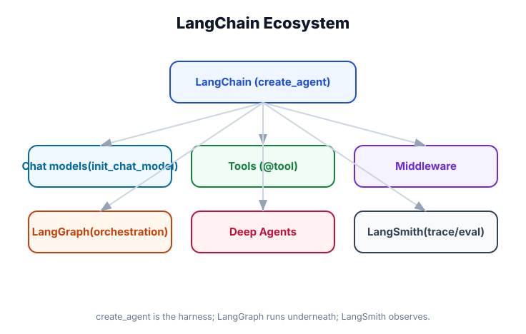

What is LangChain?
What you'll learn: What LangChain actually is (and isn't), how the v1.0 API differs from older tutorials you might find online, the full ecosystem (LangGraph, LangSmith, Deep Agents), and the philosophy behind when to use LangChain versus alternatives.

↗ Open full size · ⬇ Edit in Excalidraw — labels use real LangChain classes.
The One-Sentence Answer
LangChain is a Python framework for building AI agents — programs that use large language models (LLMs) to reason about problems and take actions using tools.
The core idea: you give an LLM a goal, a set of tools (functions it can call), and optionally some memory. The LLM figures out which tools to use, in what order, and iterates until it achieves the goal. LangChain handles all the plumbing.
Think of LangChain as a professional kitchen. The LLM is the head chef — the reasoning brain. Tools are the appliances and ingredients — web search, calculators, databases, APIs. LangChain is the kitchen itself: the layout, the equipment mounts, the ordering system, the pass-through window. Without the kitchen, the chef could still cook — but slowly, chaotically, and with no way to serve multiple orders at once.
What Changed in LangChain v1.0
If you've seen older LangChain tutorials (pre-2024), you'll notice everything looks different. That's intentional. LangChain went through a significant redesign:
prompt | llm | parser). LangGraph launched as a separate package for building stateful multi-step workflows as graphs. This is when agents became truly powerful.create_agent() — one function to rule them allcreate_agent(). Under the hood it still uses LangGraph, but you rarely need to touch that directly. The focus shifted from "how do I wire this together?" to "what do I want the agent to do?"Most LangChain tutorials on YouTube and Medium are from the v0.x era. APIs like LLMChain, AgentExecutor, and ConversationalRetrievalChain still exist but are deprecated. This course covers v1.0 only — the modern API.
The LangChain Ecosystem
LangChain isn't a single package — it's a family of tools that work together. Here's the map:
The Core Abstraction: create_agent()
In LangChain v1.0, almost everything you do flows through one function:
from langchain import create_agent, init_chat_model
agent = create_agent(
model=init_chat_model("openai:gpt-4o"),
tools=[search_web, run_python, read_file], # Python functions
system_prompt="You are a helpful research assistant.",
checkpointer=InMemorySaver(), # short-term memory
store=InMemoryStore(), # long-term memory
)That's it. The agent will automatically:
- Decide which tools to call (and in what order) based on the user's request
- Pass tool results back to the model to reason about next steps
- Keep the conversation history across turns (via
checkpointer) - Remember things across sessions (via
store) - Stream output token-by-token if you ask it to
What the Agent Loop Actually Looks Like
Under the hood, the agent follows the ReAct pattern (Reasoning + Acting). It's a loop:
1. Reason
The LLM looks at the conversation history and decides what to do next. It might answer directly, or decide to call a tool.
2. Act
If the model chose a tool, LangChain executes it and captures the result. This could be a web search, database query, API call — anything Python can do.
3. Observe
The tool result is added to the conversation as a message. The model sees it and loops back to Reason again — until it's ready to answer.
When to Use LangChain
LangChain is not always the right tool. Here's an honest decision guide:
| Situation | LangChain? | Why |
|---|---|---|
| Building an AI agent that uses tools | ✓ Yes | This is exactly what it's built for |
| Multi-turn chat that remembers context | ✓ Yes | Checkpointers and state management are built-in |
| RAG (answering questions from your documents) | ✓ Yes | Rich retrieval primitives: loaders, splitters, vector stores |
| Simple one-shot prompt → response | Not needed | Use the provider SDK directly (openai, anthropic) |
| Complex agentic workflows with many subagents | ✓ Yes | Or consider deepagents for batteries-included |
| Real-time document analysis | ✓ Yes | Streaming + document loaders work together well |
LangChain vs Deep Agents
LangChain docs mention Deep Agents as a "batteries-included" alternative. Here's when to choose which:
langchain (this course)
Best when you need control. You decide exactly which tools exist, how they behave, and how the agent is structured. Highly customizable. Suitable for production apps.
deepagents
Best for rapid prototyping of complex agents. Ships pre-built tools for filesystem access, web browsing, subagent orchestration. Less configuration, more convention.
The Philosophy Behind LangChain v1.0
Three design principles drive every decision in the v1.0 API:
Best Models
LangChain is model-agnostic. Swap between OpenAI, Anthropic, Google, or local models by changing one string. The framework never favors one provider over another.
Complex Orchestration
Single LLM calls are easy — any SDK can do that. LangChain shines when you need sequences of decisions, tool chains, memory, and error recovery.
Full Observability
LangSmith tracing is baked in from the start. Every call, tool use, and token is traceable. You can debug, evaluate, and improve agents systematically.
Real-World Use Case
💼 Customer Support Agent at Scale
A SaaS company builds a support agent using LangChain. The agent can: search a product knowledge base (RAG), look up specific customer account details (database tool), create support tickets (API tool), escalate to human support with context (HITL middleware), and remember that a customer prefers email over chat (long-term memory store). All of this runs under a single create_agent() call, with LangSmith tracing every interaction for QA review.
LangChain v1.0 = create_agent(model, tools, memory). The core loop is ReAct (Reason → Act → Observe). LangGraph is the runtime underneath. LangSmith is for observability. In the next module, you'll have a working agent running in under 5 minutes.